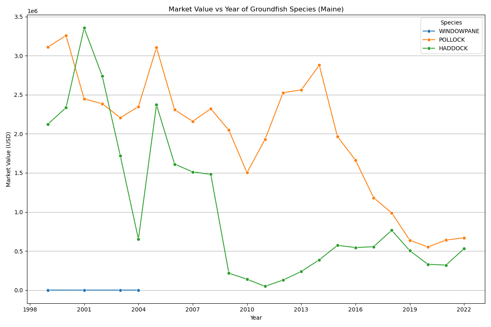
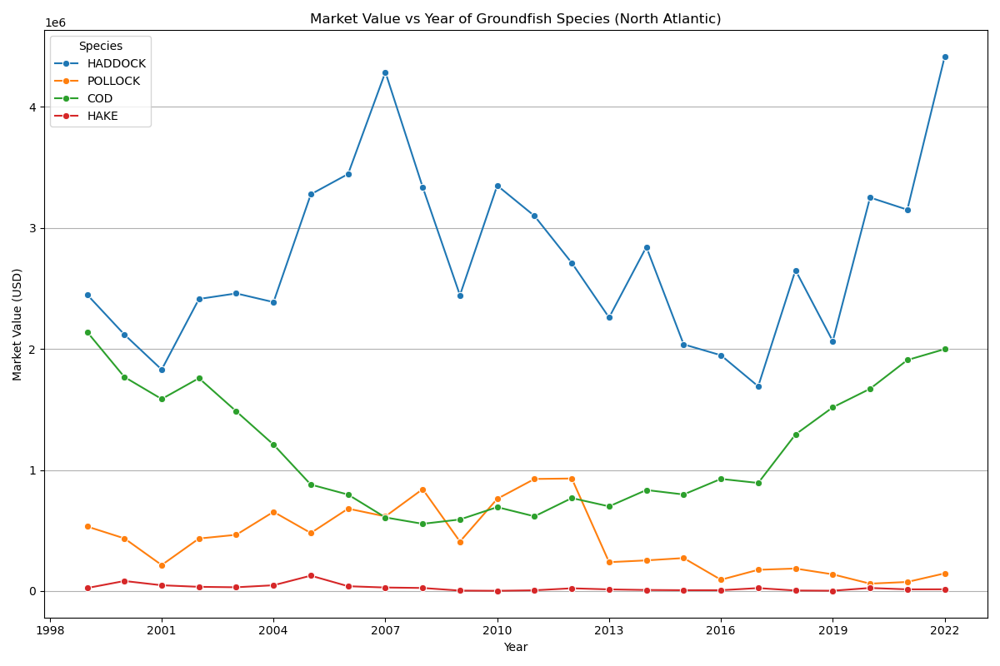
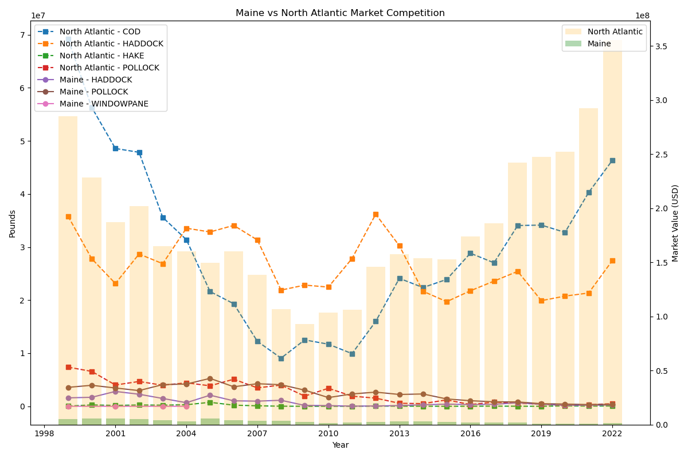
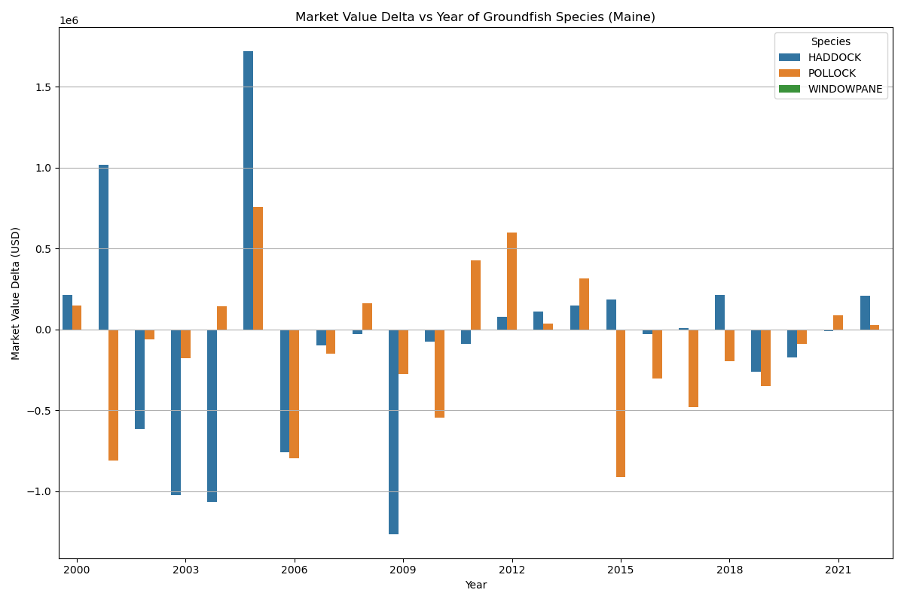
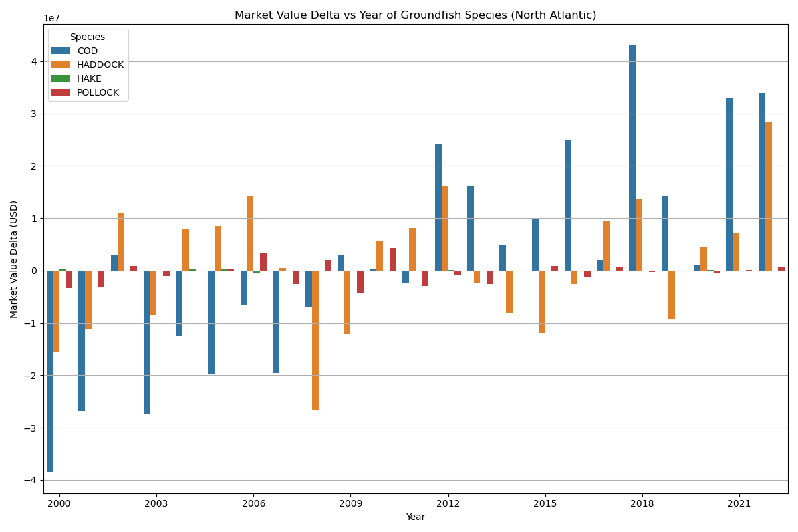

1999 - 2022 Maine and North Atlantic Groundfish Market Competition Analysis Report
The groundfish market in Maine and the North Atlantic region has seen significant fluctuations in recent years, with changes in market value, volume, and species popularity. This report provides an in-depth analysis of the market competition between these two regions from 1999 to 2022.
Market Value
Reflecting on market dynamics across regions, the HADDOCK species stood prominently in Maine during 2001, commanding a market value of $3,354,838. Conversely, in the North Atlantic region, it was the COD species that held sway, achieving the highest market value of $90,090,190.
Moreover, the average market value in Maine was $1,395,682, accompanied by a median value of $1,492,050. In contrast, the North Atlantic boasted an average market value of $1,409,251, with a corresponding median of $83,638.
Market Volume
Exploring market volumes, the POLLOCK species took precedence in the Maine market during 2005, boasting a total volume of 5,258,613 pounds. In contrast, the North Atlantic region experienced its peak volume with the COD species, reaching 31,108,566 pounds.
Furthermore, the mean market volume in Maine amounted to 1,512,544 pounds, accompanied by a median volume of 999,859 pounds. Conversely, in the North Atlantic, the mean market volume stood at 449,237 pounds, with a corresponding median volume of 999,859 pounds.
Market Value per Pound
To determine the most valuable species per pound, we analyzed the market value per pound for each region. In Maine, the HADDOCK species fetched the highest price per pound in 2012, with a value of $2.3. The North Atlantic region, on the other hand, saw its peak value per pound for the COD species in 1999, reaching $1,718.0.
| Region |
Species |
Mean Market Value per Pound (USD) |
Median Market Value per Pound (USD) |
| Maine |
HADDOCK |
1.5 |
1.4 |
| Maine |
POLLOCK |
1.0 |
0.9 |
| Maine |
WINDOWPANE |
0.5 |
0.6 |
|
| North Atlantic |
COD |
5.8 |
4.3 |
| North Atlantic |
HADDOCK |
3.7 |
3.2 |
| North Atlantic |
HAKE |
2.8 |
2.0 |
| North Atlantic |
POLLOCK |
2.2 |
1.7 |
Market Competition Analysis
To gain a comprehensive understanding of the market competition between Maine and the North Atlantic region, we have included several visualizations:
Market Value Time Series
The market value time series charts provide a visual representation of the market value trends for both regions over the analyzed period, highlighting the ebbs and flows in value for different species.


Market Competition Visualization
The following visualization provides a direct comparison of the market volume competition between Maine and the North Atlantic region, revealing the interplay between these two markets.

Year to Year Market Value and Volume Delta Analysis
Market Value Change per Species
The market value change time series charts illustrate the year-to-year changes in market value for each region and species, allowing for a better understanding of fluctuations and potential market shifts.


Total Market Value and Volume Change Table
The market value change table below presents a tabular representation of the year-to-year changes in market value for both regions, allowing for easy comparison and analysis of market fluctuations.